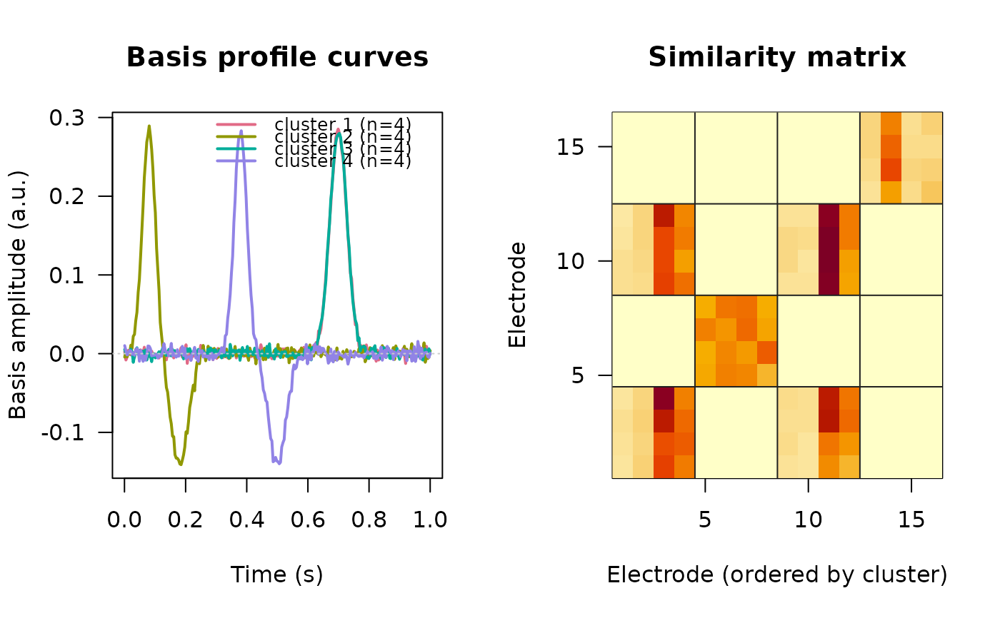

Groups recording electrodes by the shape of their canonical evoked
response. Each electrode is summarized by crp into one
amplitude-normalized canonical shape; an electrode-by-electrode similarity
matrix is factorized with naive_nmf to find clusters that share
a response shape, and a representative basis profile curve is extracted per
cluster. This applies the basis-profile-curve (BPC) approach
across electrodes rather than across stimulation sites; see
‘References’.
Arguments
- crp_list
a named list of
ravetools_crpobjects (one per electrode) fromcrp; list names are used as electrode labels. Time axes need not match - the common overlapping domain is used (an error is raised if the domains do not overlap). See ‘Details’.- paired
logical;
TRUE(the default) builds the trial-levelBPCt-statistic similarity and requires the single trials in.data$V;FALSEuses the cosine similarity of theC_fullcurves. See ‘Details’.- time_window
numeric
c(lo, hi)analysis window, clipped into the common domain; anNAextends to that domain edge. Defaults toc(0, NA)(stimulus onset to the end of the domain).- n_clusters
integer or
NULL; if given, fixes the number of clusters and skips the automatic selection (which otherwise useszeta_threshold).- initial_rank
integer or
NULL; the startingNMFrank for automatic selection.NULLusesmin(length(crp_list) - 1L, 10L).- zeta_threshold
numeric \(> 0\); rank-selection cutoff on \(\zeta\) (see ‘Details’); smaller values give fewer clusters. Defaults to
1, matching theBPCreference.- null_class
logical; if
TRUE(the default) electrodes whose winner-take-all loading falls below \(1/(2\sqrt{N})\) are left unassigned (NA); ifFALSEevery electrode is forced into a cluster. See ‘Details’.- nmf_max_iters, nmf_tol
passed to
naive_nmf.- verbose
logical; whether to report progress.
Value
A named list of class ravetools_crp_cluster:
clustersInteger vector, the cluster index assigned to each electrode (winner-take-all over the row-normalized
NMFloadings). Whennull_class = TRUE, electrodes whose top loading falls below \(1/(2\sqrt{N})\) are left unassigned (NA).basis_curvesNumeric matrix, time \(\times\) number of clusters; column \(q\) is the basis profile curve \(B_q(t)\) for cluster \(q\), the first linear-kernel
PCAcomponent of its memberC_fullcurves, sign-oriented to the cluster mean.basis_timesNumeric vector, the time axis for
basis_curves(the common overlapping time axis, restricted totime_window).similarityNumeric matrix, the electrode-by-electrode similarity \(\Xi\) that was factorized (non-negative, scaled to a maximum of one).
nmfThe
naive_nmfresult for the selected rank.n_clustersInteger, the number of clusters found.
domainNumeric
c(lo, hi), the overlapping time domain shared by all electrodes.paired,time_windowThe settings used;
time_windowis the effective window after clipping intodomain.
Details
Common window. Electrodes may have different time axes (
crpdropsNAsamples); the overlapping time domain is used,time_windowis clipped into it, and each electrode is subset on the fly with no interpolation.Similarity. With
paired = TRUEeach entry is the one-sample t-statistic, across an electrode pair's common trials, of the per-trialCCEPcross-projection of the \(1/\alpha\)-rescaled responses; negatives are zeroed, the matrix made symmetric and scaled to a maximum of one. Withpaired = FALSEit is the cosine cross-projection of theC_fullcurves.Rank selection.
naive_nmffactorizes the similarity at rank \(Q\) (frominitial_rank); each rank is re-run a few times and the lowest-error fit kept. \(Q\) is reduced while \(\zeta\) - the sum of the upper off-diagonal of the row-normalized \(HH^\top\) - exceedszeta_threshold.Assignment. Each electrode takes its winner-take-all cluster over the normalized
NMFloadings; withnull_class, loadings below \(1/(2\sqrt{N})\) are left unassigned.Basis curves. Per cluster, the first linear kernel
PCAcomponent of its members'C_fullcurves (as incrp).
References
The BPC method is described in doi:10.1371/journal.pcbi.1008710
; the
underlying CRP method in doi:10.1371/journal.pcbi.1011105
.
Examples
# Four response shapes; shapes 3 and 4 differ only in amplitude, so they
# cluster together once shapes are amplitude-normalized.
# \donttest{
n_time <- 300L
tt <- seq(-0.2, 1, length.out = n_time)
shapes <- list(
exp(-((tt - 0.08) / 0.03)^2) - 0.5 * exp(-((tt - 0.18) / 0.04)^2),
exp(-((tt - 0.38) / 0.03)^2) - 0.5 * exp(-((tt - 0.50) / 0.04)^2),
exp(-((tt - 0.70) / 0.04)^2),
exp(-((tt - 0.70) / 0.04)^2) * 2
)
# 4 electrodes per shape, each parameterized with crp()
crp_list <- list()
for (g in seq_along(shapes)) {
for (e in seq_len(4L)) {
V <- outer(shapes[[g]], runif(15L, 0.5, 1.5)) +
matrix(rnorm(n_time * 15L, sd = 0.15), n_time, 15L)
crp_list[[sprintf("elec_%d_%d", g, e)]] <-
crp(V, tt, remove_artifacts = FALSE)
}
}
res <- crp_cluster(crp_list, verbose = TRUE)
#> rank 10: HH^T off-diagonal sum = 13.222 > 1.00, reducing
#> rank 9: HH^T off-diagonal sum = 11.592 > 1.00, reducing
#> rank 8: HH^T off-diagonal sum = 8.009 > 1.00, reducing
#> rank 7: HH^T off-diagonal sum = 5.804 > 1.00, reducing
#> rank 6: HH^T off-diagonal sum = 3.280 > 1.00, reducing
#> rank 5: HH^T off-diagonal sum = 2.428 > 1.00, reducing
#> selected rank 4 (HH^T off-diagonal sum = 0.569)
res$n_clusters
#> [1] 4
table(res$clusters)
#>
#> 1 2 3 4
#> 4 4 4 4
plot(res)

# }